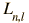

The Radial Equation
Upon separation of the Schrodinger equation for the hydrogen atom, the radial equation is:

In order to separate the equations, the radial part is set equal to a constant, and the form of the constant on the right above reflects the nature of the solution of the colatitude equation which yields the orbital quantum number.
Solution of these equations under the constraints placed on the wavefunction leads to series solutions in the form of polynomials called the associated Laguerre functions. In order to fit the physical boundary conditions, these solutions contain a parameter n which can take only positive integer values; this parameter is called the principal quantum number. The form of the radial solutions is
where  is the associated Laguerre function. The first few radial wavefunctions R are shown as part of the hydrogen wavefunctions.
Schrodinger equation concepts
Hydrogen concepts